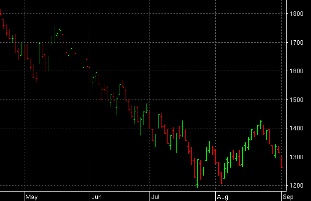
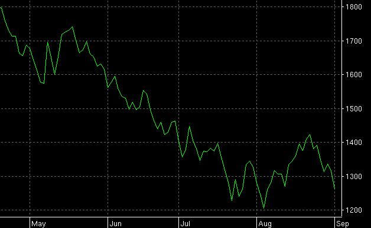
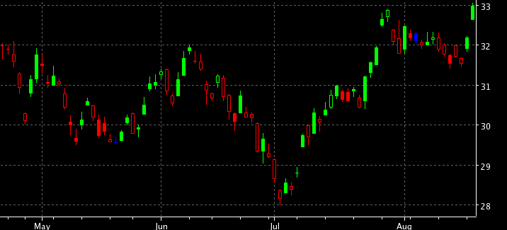
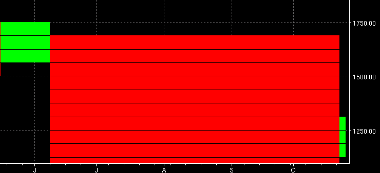
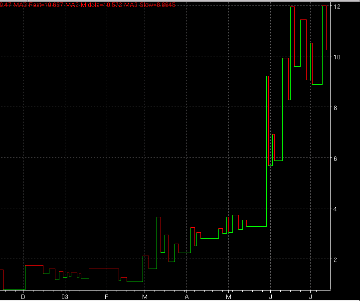
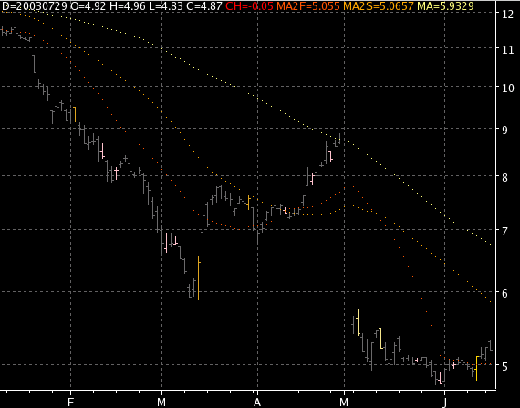

Chart type is the type or 'style' of the main plot the user wishes to display. The available types are:
The standard OHLC bar chart. Color is used to show up, down or no change status from the previous bar.
Same as the Bar chart type except that the colors used are based on the alert status rules of an active indicator. Used for showing generalized support and resistance areas. For example, this paint bar is based on the MACD indicator. Notice how when the red MACD line rises above the MACD yellow trigger line, the bars are green, meaning a buy alert. When the MACD falls below the MACD trigger line, the bars are colored red, meaning a sell alert.
This chart is just a single line plot based on the days close value.

This is the standard candlestick chart.

Qtstalker version of Point and Figure uses a general box sizing formula. The formula is calculated by taking the increment of the current chart scale and divide that by 4. A 3 box reversal is also used. The other difference is no X's or O's are used, instead we use colors. Color up is used for X's and Color Down is used for O's. Much easier to gauge at a glance and stays in keeping with other chart type uses of color. Note that Qtstalker uses a time based style that allows you to overlay indicators.

This is the typical Gann type swing chart.

NOTE: This chart type is experimental. See more explanation.
"Outside Bars" (yellow-to-red) - the trading range encompasses the previous bar. "Inside Bars" (pink-to-blue) - the trading range is encompassed by the previous bar.
May indicate short-term reversal. Must be accompanied by volume and preceded by a trend.
The outside bar at 20030313 is a classic. It is even more strong as it encompasses both previous bars and has a large body.
